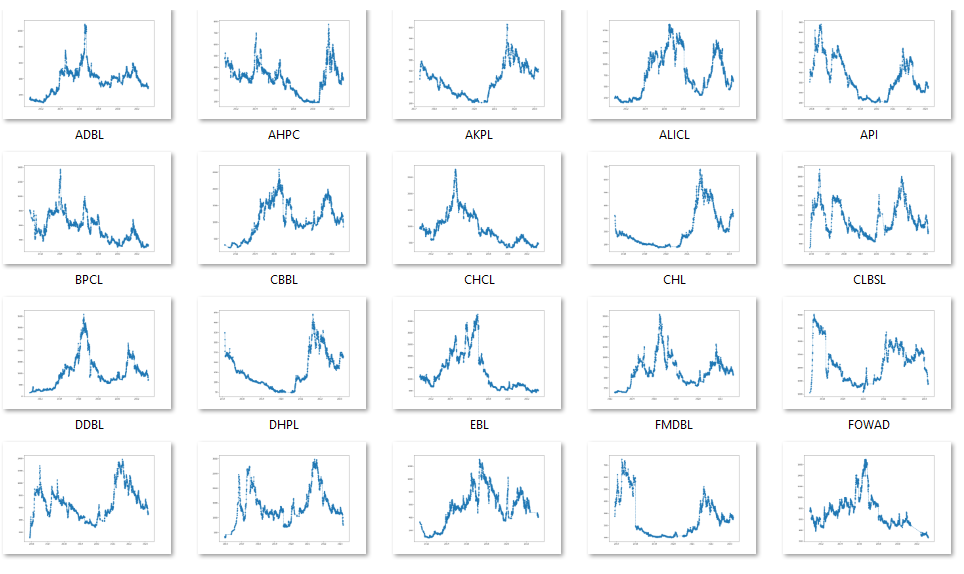

Dividend Adjusted Stock Price Series
In this project I created dividend/right adjusted price series from unadjusted price series from scratch. When the companies announce dividends, right, and stock splits large price gaps are seen on the price chart on Ex-dividend date. Such price gaps make distort the time series data and are unreliable to perform further price related analysis. Hence it is crucial to use adjusted price series. I will explain each steps I performed in this article.
1. Data Extraction
Historical Stock Price
Over 12 years of data was scraped using Python's Beautifulsoup library from the official NEPSE website. You can find the Jupyter notebook code I used for scraping here.
Dividend History
I used sharesansar to scrape historical dividends of all stocks. You can find the code for downloading dividend histoy here.
The downloaded data were stored in a csv file.
2. Data Cleaning
It is very common to see the extracted data very messy. In the case of historical stock price there were many errors in the data source itself. There were many missing values and outliers. I used visualization technique to spot the abnormalities in the data. 
The code for validating data sanity before and after adjustment can be found here.
3. Adjustment Algorithm
Finally after the data extraction and cleaning, backward adjusting Algorithm was applied to the price series to generate adjusted price series based on the dividends, rights, and splits. The following example chart of NLIC (Nepal Life Insurance Company Ltd.) illustrates difference between unadjusted and adjusted chart. You can see that the gaps seen in the unadjusted chart are adjusted based on the dividends and rights on the right side.

News Headline Word Cloud Analysis with Tableau Dashboard
I have gathered seven years' worth of news headlines from various categories by scraping data from the website https://myrepublica.nagariknetwork.com/ using Python. Subsequently, I developed a dynamic dashboard that empowers users to select the desired year, news category, and word frequency range. This dashboard enables to analyze and visualize the frequency of repeated words in the selected dataset. Around 84,000 news titles were scraped using python Beautifulsoup library with total words amounting to around 800,000.

Technical Strategy Backtesting
I wanted to test a simple trading strategy comprising of MA-20, MACD, and RSI. I developed my own
back testing system.
Rule of the strategy:
Buy: When price is above 20 MA, RSI is above 50, and MACD line is above signal line.
Sell: When price is below 20 MA, RSI is below 50, and MACD line is below signal line.

The vertical dotted blue line indicates buy signal whereas the vertical red line signals sell.
The adjusted price series generated in project 1 was used as input price series for this project.
Stock Broker Turnover Racing Bar Chart

I used Bar_chart_race library for this visualization.
Mutual Funds Comparision Visualization
This program demonstrates the visualization for comparision of mutual funds of Nepal.
.png)
.png)

Data Science Projects

During my learning process on Coursera I completed several small data science projects.
You can find link to the repo here